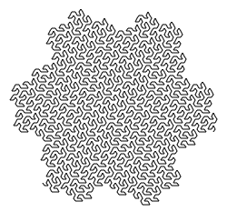
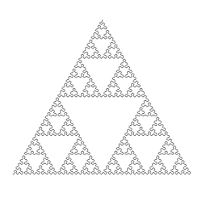
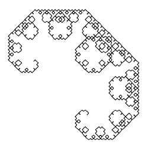

Lindenmayer System Generator
Lindenmayer Systems (L-Systems) are fractals created by a set of replacement rules. To see them in action, choose an example below. Then make your own by changing the starting parameters.

Koch Snowflake
It is based on the Koch curve, which appeared in a 1904 paper titled "On a continuous curve without tangents, constructible from elementary geometry."

Sierpinski Triangle
It is based on the Koch curve, which appeared in a 1904 paper titled "On a continuous curve without tangents, constructible from elementary geometry."

Levy C Curve
It is based on the Koch curve, which appeared in a 1904 paper titled "On a continuous curve without tangents, constructible from elementary geometry."
Starting Position
click on the canvas to set
400
,
500
Line Length
1
2
3
4
5
6
7
8
Replacement Iterations
3
4
5
6
7
8
9
10
Angles
starting:
degrees
increment:
degrees
Starting String
Replacement Rules
>
+
hover over a rule to edit
edit
remove
A
A-B-A
edit
remove
B
B+A+B
Render
@2010 Nolan Carroll